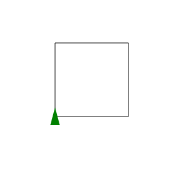
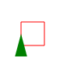

|
Introduction to Programming and Problem-solvingCS 161 (Fall 2013) |
|||||||||||||||||||
The Design Recipe |
|
The Design Recipe
The design recipe is a step-by-step process that will help you design
and organize your programs. The idea of a design recipe was
introduced by Felleissen et al. in
their book How to Design Programs.
For students who don't like to be stuck looking at a blank screen, the
design recipe tells you how to get started. If you are uncertain
how to express something in Grace, the design recipe will help by
separating what you want to
express from the how of doing
it in Grace. |
A purpose statement is a Grace comment that summarizes the purpose of the method in a single line. It should be a short but precise answer to the question “what does this method compute?” It should tell someone reading your program what the method does without them having to read the code. Here is an example purpose statement:
//Return the Fahrenheit equivalent of a number representing a temperature in degrees Celsius. |
The header tells Grace that you are defining a method, gives the method a name, says how many parameters the method will have, and gives them names too. For example:
method celsiusToFahrenheit(cTemperature) { //Return the Fahrenheit equivalent of cTemperature, a number in degrees Celsius. |
Notice that now we have given the parameter a name, we can make the purpose statement more precise by referring to that name. This becomes even more helpful when there are multiple parameters. For example:
method square(size, color) { //Draw a square with sides of length size, filled with color. |
Notice also that the way this is written makes it legal Grace: the header starts with method, followed by the name of the method being defined, followed by the list of parameters (or no parenthesis if there are no parameters). The first line ends with a brace, and the comment must be indented and be on the very next line.
You can run your Grace method at this point, and it's useful to do so, because Grace will tell you if you have formatted something incorrectly. Of course, your method won't yet do what you have said it will do in the purpose statement, because you have not yet written any code. (Try it! What does your method do? What value does it return?)
Notice that for the method celsiusToFahrenheit we can write down what we expect the method to return, because it is a comment that returns a value.
| celsiusToFahrenheit(0) should be 32.0 celsiusToFahrenheit(100) should be 212.0 celsiusToFahrenheit(-40) should be -40.0 |
In contrast, square is a method that has an effect, so we instead describe what the effect should be.
square(12, red) // draws a red square with sides 12 pixels long. |
In contrast, square is a method that has an effect, but returns no result. We still write an example method call, but this time we expect no result. To clarify our explectations, we write a comment describing what the effect should be.
At this point you may well realize that you have been sloppy when you wrote your purpose statement, and have left out important details. For example, the purpose statement didn't say that in the method square, how color would be represented. It's a fine idea to go back and change your purpose statement. If everything won't fit on one line, it's OK to add lines with additional detail. Nevertheless, the first line should still stand alone as a brief summary of the method's purpose.
You may also find that the name that you chose doesn't look so good when you see it being used, in a method call. If so, go back and change the name.
We have put all three of these steps in the same box because sometimes it will be obvious how to write the code once you have taken inventory, and sometimes it will be far from obvious. Let's work through our two running examples.
Suppose that you are developing celsiusToFahrenheit.
Inside the method, you know the value of the parameter, cTemperature. You also
know that 0°C is 32°F and that the Fahrenheit degree is 5/9 of the size
of the Celsius degree. So, after a moment's thought, you might realize
that
expresses the Fahrenheit temperature, and quickly move to
completing the method definition:
method celsiusToFahrenheit(cTemperature) { //Return the Fahrenheit equivalent of cTemperature, a number in degrees Celsius. //celsiusToFahrenheit(0) should be 32.0 //celsiusToFahrenheit(100) should be 212.0 //celsiusToFahrenheit(-40) should be -40.0 return (cTemperature * 9 / 5) + 32 |
Then you test your method on the examples that you wrote in Step 3, and you find that it works for all of them.
Our other program example isn't so easy. What do you
know about drawing squares? Inside the square method, you know
the three parameters — size,
origin
and color.
You also know
that the turtle library can help you make drawings, but you don't
remember the details of what's in that library. In such a case,
it can be helpful to write down in English a series of steps that you
think might help bring you closer to a solution. In this case, I
might write, with pencil and paper
- import the logo dialect
- head forward size pixels
- head right size pixels
- head backward size pixels
- head left size pixels
So let me use the computer to help turn this plan into working code. First, I put the above list of steps into the body of my Grace method as comments:
method square(size, color) { //Draw a red square with sides of length size. // square(12, red) // draws a red square with sides 12 pixels long. //import logo // head east size pixels // head south size pixels // head west size pixels // head north size pixels |
Notice that I can still run my method, although it still won't do anything! Next, I take a look at the Grace Turtle graphics documentation, and I see that these steps are quite similar to the kinds of thing that a turtle can do. So I take a stab at writing some Grace to do them:
dialect "logo" method square(size, color) { // Draw a red square with sides of length size. // square(12, red) // draws a red square with sides 12 pixels long. foward(size) // head forward size pixels turnRight(90) forward(size) // head right size pixels turnRight(90) forward(size) // head backwards size pixels turnRight(90) forward(size) // head left size pixels turnRight(90) } |
I run this Grace code, and ... nothing happens! More precisely, nothing appears to happen. In fact, Grace has accepted a new definition for the method square, but that's all. We have to try it out to see if we are close to what we wanted.
So we go back to our example from Step 3, which is safely stored in the docstring, and try:
square(12, red) Syntax error: no method foward(_) in "test" (line 7, column 5) |
This may not look promissing, but it's actually really helpful! Grace is telling us that there is no “foward” in the turtle module, and if I look carefully at line 12, I see that I've mis-spelled “forward” as “foward”. This is pretty easy to fix; next time, when I run the code, I get the complaint “NameError: global name 'tutle' is not defined”, which is quite true! I correct “tutle” to “turtle”, and on the next run, I get no complaints from Grace, which draws a picture like this:

Everything looks good except for the color. Turning to the documentation, I see that I need to set the penColor, if I'm going to fulfill the purpose statement that I wrote in step 2.
dialect "logo" method square(size, color) { //Draw a square with sides of length size, outlined with color. // square(12, red) // draws a red square with sides 12 pixels long, penColor := color forward(size) // head forward size pixels turnRight(90) forward(size) // head right size pixels turnRight(90) forward(size) // head backward size pixels turnRight(90) forward(size) // head north size pixels turnRight(90) |
Now I get the image that I specified in the purpose statement:

To summarize steps 4, 5 and 6: taking inventory and writing your code may happen in sequence if the method is very simple, but most likely alternate with testing. When your tests treveal a problem, look at the resoures that you have available to help you solve it. When all of your tests pass, wriote some more tests. Try and break your code!
The final step in the design recipe is to take a look at your code and clean it up. Did you choose good names for the parameters? Are those comments useful? In the square example, some of the comments just repeat what the Grace already says; that's useless verbiage. Others add higher level information, such as the heading of the turtle, that may be quite useful when we (or someone else) looks at this code some time in the future.
dialect "logo" method square(size, color) { // Draw a square with sides of length size, outlined with color. // square(12, red) // draws a red square with sides 12 pixels long, penColor := color forward(size) ## head forward size pixels turnRight(90) forward(size) // head right size pixels turnRight(90) forward(size) // head backward size pixels turnRight(90) forward(size) // head left size pixels turnRight(90) |
After every change to the code, test it again. That's the only way to be confident that you didn't accidentally mess up.